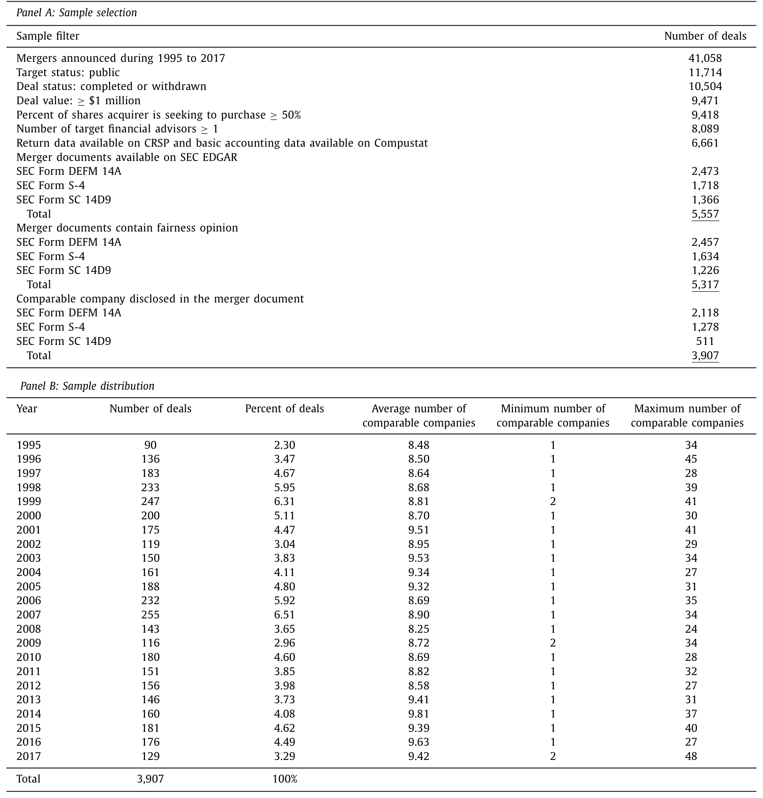
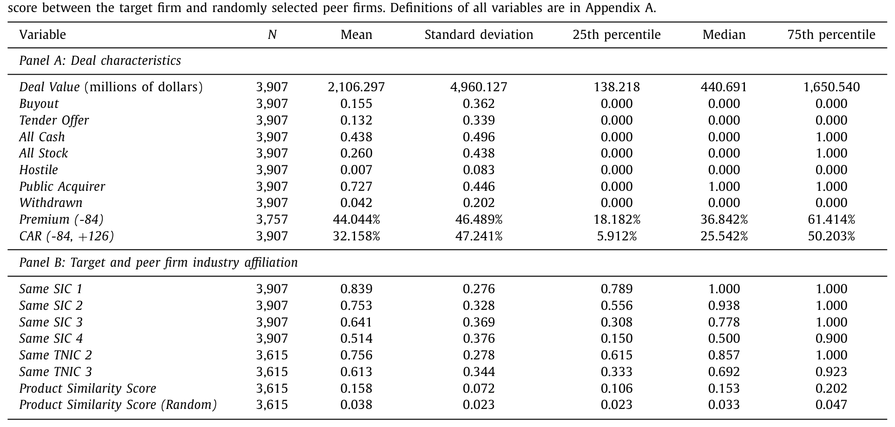
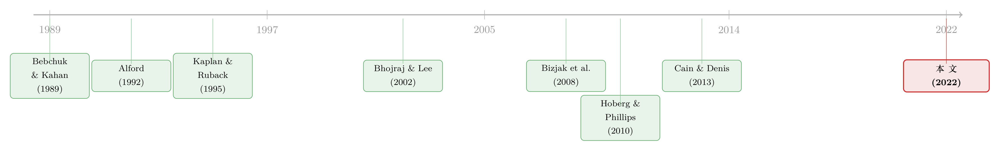

替你估值的人，正在替你「挑」对手
本文读的是 Eaton, Guo, Liu & Officer (2022, Journal of Financial Economics)：在并购的「公平意见」里，给标的公司做估值的投资银行手握「挑选可比公司」的自由裁量权，而它系统性地挑选那些更大、增长更快、估值倍数更高的同行——这些倍数又恰好和更高的成交溢价正相关。换句话说，目标方的顾问像是在替你「选对手」，好让你的身价显得更高。
1 一个看似客观的数字，背后站着谁
并购里有一份文件，几乎每个标的公司的股东都会收到，叫做 公平意见 (fairness opinion)。它要回答一个朴素到不能再朴素的问题：这桩交易，对我们小股东到底公不公平？而支撑这个判断的核心工具之一，是 可比公司分析 (comparable companies analysis, CCA)——找一篮子和标的「像」的公司，看它们的估值倍数，再反推出标的「应该」值多少钱。
这套方法朴素得近乎天真。它的全部逻辑可以写成一行：
$$\hat{V}_{target} = \overline{\left(\frac{EV}{EBITDA}\right)}_{peers}\times EBITDA_{target}$$
找到同行的「企业价值／EBITDA」倍数，乘上标的自己的 EBITDA，估值就出来了。Gompers, Kaplan & Mukharlyamov (2016) 发现，私募股权投资人对这类「看同行倍数」的方法的倚重，甚至超过了课本里被奉为圭臬的 现金流贴现 (discounted cash flow, DCF)；Liu (2020) 统计了带多份公平意见的交易，91.6% 用了 DCF，90.1% 用了 CCA——它绝不是边角料，而是估值分析里挑大梁的那一个。
可是，方法越简单，越藏着一个被人忽略的关键：那一篮子「同行」，是谁挑的？
答案是：标的公司的主承顾问，通常就是那家投资银行。而这家银行的顾问费，很大一部分要等交易完成才能拿到手。于是，一个本该「客观」的估值数字，背后站着一个利益并不中立的人。
这正是全文的「张力」所在：可比公司不是天上掉下来的客观集合，而是一个有自由裁量权、且利益不中立的人挑出来的。挑什么样的同行，几乎就决定了估值往哪个方向偏。
2 两种相反的「私心」，到底哪一种说了算
接着，一个自然的问题是：如果银行真要「做手脚」，它会往哪个方向做？
这里有意思的地方在于，两种激励是方向相反的。
一方面，银行可以帮标的把价格往上谈。要做到这一点，它该挑估值倍数高的同行——同行越贵，反推出来的标的就越贵，标的就能拿着这份「高身价」去和收购方讨价还价，争取更高的报价。这是「帮客户谈一个好价钱」的故事。
另一方面，银行也可能想让这桩交易顺利成交。毕竟顾问费大头要等成交才拿得到。要做到这一点，它反而该挑估值倍数低的同行——同行越便宜，标的看起来越「不值钱」，那么收购方开出的报价就显得格外慷慨，股东也就更容易点头同意。这是「帮交易盖个橡皮图章」的故事。Bebchuk & Kahan (1989) 很早就指出，投资银行因为「费用挂钩成交」这一结构性安排而存在内生的利益冲突，担心的正是后一种。
那么，到底哪一种私心占了上风？这不是靠讲道理能定的，是个经验问题——也正是这篇论文的主战场。
3 数据：把「谁是同行」从 SEC 文件里一个个抠出来
要回答这个问题，先得知道每桩交易里银行究竟挑了哪些公司当同行。这件事过去没人系统做过，因为它藏在一份份监管文件的「财务顾问意见」一节里，只能手工挖。
作者就这么挖了。他们从 1995–2017 年的并购交易出发，要求标的是上市公司、交易已完成或撤回、交易额不低于 $1 million、收购方意在买下 50% 以上股权、标的至少雇了一家财务顾问，并能在 CRSP 和 Compustat 上匹配到基础数据——筛下来得到 6,661 桩交易。再要求 SEC EDGAR 上能找到含公平意见、且披露了至少一家可比公司的并购文件，最终样本是 3,907 桩交易。从这些交易的公平意见里，他们一共抠出了 40,179 个同行公司名。平均每桩交易，银行会挑 8 到 10 家可比公司，这个数字在二十多年里相当稳定。

Table 1
样本本身也描了个画像：交易额均值 $2.1 billion、中位数 $0.44 billion；平均溢价高达 44%；不到 1% 是敌意收购，4% 最终撤回，15% 是管理层收购 (buyout)，13.2% 是要约收购 (tender offer)，73% 的收购方是上市公司。这是一组以友好交易、高溢价为主的样本。
4 第一个反转：SIC 码根本不会「认同行」
在追问私心之前，作者先停下来问了一个更基础的问题：银行挑的这些同行，到底「像不像」标的？
直觉上，我们会用 标准产业分类码 (Standard Industrial Classification, SIC) 来判断两家公司是不是一个行业的。可结果出人意料：近一半被选中的可比公司，和标的的四位 SIC 码根本不一样。如果只看 SIC 码，你会得出「银行乱挑同行」的结论。

Table 2
但真正关键的一步在于：这不代表同行选得差，而代表SIC 码这把尺子本身不好用。作者转而用 Hoberg & Phillips (2010, 2016) 基于 10-K 文本相似度构造的 产品相似度得分 (product similarity score)——一个连续的、衡量两家公司产品市场重叠程度的指标——重新去量。结果是：即便在那些 SIC 码对不上的交易里，被选中同行与并购双方之间的产品相似度也落在 0.097 到 0.150 之间，而 Compustat 全样本里随机两家公司的平均相似度只有 0.038。
高出三四倍。换句话说，银行其实很懂行——它是按产品市场空间在挑同行，只不过 SIC 码这种粗粒度的分类码，把这种「行业重叠」严重低估了。这一发现，和金融学里对 SIC 码长期的怀疑一脉相承（Kahle & Walkling, 1996；Hoberg & Phillips, 2010），也顺手把「产品市场空间是同行选择最重要的维度之一」这个结论钉了下来。
5 真正关键的一步：在「像」之外，还挑了什么
确认了银行确实在「像」的维度上认真挑同行之后，论文才走到它真正想问的地方：在「像」这个约束之内，银行还偏好什么样的同行？
作者沿着四个维度去看：规模 (size)、增长 (growth)、资产效率 (asset efficiency)、估值倍数 (valuation multiples)。结论强而稳健——投资银行系统性地偏向挑选那些更大、增长更快、估值倍数更高的公司当同行。
这就和前面那个 CEO 薪酬「找同行」的文献遥相呼应了。在高管薪酬基准 (compensation benchmarking) 这个完全不同的场景里，Bizjak, Lemmon & Naveen (2008)、Faulkender & Yang (2010) 等人发现，公司倾向于把更大、CEO 薪酬更高的公司塞进「可比组」，从而把自家 CEO 的薪酬往上抬。这篇论文说的是同一种「策略性挑同行」的逻辑，只是搬到了并购估值这个新舞台上。
把「挑同行」理解成一种普遍的博弈行为，是这篇论文最讨巧的切入点：无论是给 CEO 定薪、还是给标的估值，只要「可比组」由有私心的一方来挑，挑选本身就会朝着对挑选者有利的方向系统性地偏。（关于「谁是同行」这件事在资产定价里的另一种回响，可参见《强邻、弱邻，和你站的位置》。）
6 于是反转出现：高倍数同行，真的换来了高溢价
挑高估值的同行，到底有没有「用」？这是把前面所有铺垫收口的一击。
论文第 7 节去看价值含义：被选中同行的估值倍数，和成交溢价、以及标的在交易宣布时的股价异常收益正相关。也就是说，那些被精心挑出来的「又贵又亮眼」的同行，确实伴随着标的最终谈成了更高的价钱。
把两步连起来，故事就完整了：目标方的顾问，通过挑选高知名度、业绩好、估值高的同行，把标的的「感知价值」抬了上去，帮自己的客户（标的）从收购方那里谈到了更高的报价。这和「银行为了尽快成交、橡皮图章式地压低估值」的那种故事对不上——证据更支持「帮客户抬价」，而不是「帮交易放水」。
但作者很诚实地保留了一个例外。在 管理层收购 (management buyout, MBO) 这种代理冲突格外尖锐的子样本里——管理层有动机以尽可能低的价格从股东手里买下公司——他们发现被选中的同行反而估值更低、经营表现更弱。不过这个结果在控制了收购方特征之后会减弱，所以作者没有下死结论，只说提供了「一些证据」表明银行可能在收购方会刻意压低同行估值，来为更低的溢价开脱（呼应 Bargeron, Schlingemann, Stulz & Zutter, 2008 关于私有收购方为何出价更低的讨论）。
几个补充分析也颇有味道：声誉更高的银行更看重「挑大公司」、更强调产品市场空间；在 FINRA Rule 5150（一项要求加大披露银行利益冲突的监管变化）实施之后，有一些证据显示银行倾向于挑估值更高的同行；标的产品越独特，银行挑的同行数量越少；而当标的同时雇了多家投行时，各家挑出来的同行高度重叠——说明这些可比公司是被认真挑出来的，不是随手凑数。
7 文献脉络
把这条线索从头捋一遍，能更清楚地看到这篇论文站在哪里。
最早，人们关心的是 CCA「准不准」。Alford (1992) 给出了市盈率倍数法的描述性证据，Kaplan & Ruback (1995) 用一个小样本对比了 CCA 与 DCF 的估值精度，Kim & Ritter (1999) 把目光投向 IPO 定价里的倍数法。接着，焦点转向私有公司估值——Beatty, Riffe & Thompson (1999) 和 Officer (2007) 都在这个场景下研究 CCA。然后，一个更深的问题浮出水面：到底该怎么挑同行？ Bhojraj & Lee (2002) 是精神上和本文最接近的前辈，他们从「能否预测未来回报与倍数」的角度讨论了可比公司选择的优劣。
与此并行的，是一整条关于公平意见与利益冲突的争论：Bebchuk & Kahan (1989) 担心费用结构让银行内生地有冲突，Davidoff (2006)、Kisgen, Qian & Song (2009)、Cain & Denis (2013) 则各自从不同角度评估这种冲突到底有没有污染估值。再加上 Hoberg & Phillips (2010, 2016) 用文本相似度重新定义「行业」的工具，以及 Bizjak et al. (2008) 那条「策略性挑同行」的薪酬文献——这篇论文恰好坐落在这几条线的交汇处：它第一次用大样本、手工数据，直接看银行究竟挑了哪些同行，并把「挑选」和「溢价」连了起来。

8 评论与延伸（Q&A + 研究方向）
(a) 几个可能的疑问
Q：选择性披露会不会污染样本？要约收购里很多交易压根不披露估值分析。
这是个真问题。要约收购 (SC 14D9) 因为不需要股东投票，标的往往不披露估值分析，能拿到可比公司信息的不到一半。作者的应对是在所有同行选择的回归里加入交易固定效应 (deal fixed effects)，把「哪些交易会披露」这一层差异吸收掉，识别只来自同一桩交易内部「选了谁、没选谁」的对比。这缓解了选择性披露的担忧，但无法完全排除「披露与否本身和挑选行为相关」的可能。
Q：「挑高倍数同行 → 高溢价」会不会是反过来的？真正值钱的标的，本来就该和高倍数公司比。
这是全文识别上最该警惕的地方。如果标的的真实质地更好，它本来就既配得上高倍数同行、又配得上高溢价，那么相关性就不是「策略性挑选」造成的。作者用同行的可观测特征（规模、增长、效率）去刻画「像不像」，并论证在控制了相似度之后，银行仍偏向高估值同行——但「质地」里总有不可观测的部分。这是一篇关联证据（consistent with）很强、但纯净因果略弱的论文。
Q：为什么用产品相似度，而不是直接修一个更细的行业码？
因为 SIC 码是离散的「抽屉」，本质上回答不了「重叠多少」这种连续问题。Hoberg & Phillips 的得分直接读 10-K 里的产品描述文本，给出 0 到 1 的连续重叠度，能捕捉「跨 SIC 码但产品高度重合」的情形——而这恰恰是近一半被选同行的真实状态。
Q：这和 CEO 薪酬里的「挑同行」是一回事吗？
机制同源、场景不同。两者都是「可比组由有私心的一方来挑」，挑选都朝对挑选者有利的方向偏。但薪酬场景里偏的是「往上抬薪酬」，并购里偏的是「往上抬标的感知价值」，而且并购里还多了一个方向相反的「压低估值促成交」的对立假设——本文的贡献正是判出了前者占优。
Q：高溢价对标的股东是好事，那这算「冲突」还是「尽责」？
微妙之处就在这里。如果银行抬高估值帮股东谈到了更高的价钱，这其实和股东利益一致，更像「尽责」而非「损人利己」。论文的措辞也很克制：它说证据支持「帮客户抬价」、不支持「橡皮图章压价放水」。真正的代理问题集中在 MBO 那个子样本——管理层既是买方又掌握顾问选择权时，方向才可能掉头。
Q：FINRA Rule 5150 之后银行挑更高估值同行，不是更透明了吗，怎么反而更激进？
作者对这一点的证据本身就标注为「一些证据」，量级和稳健性都偏弱，不宜过度解读。一种解释是：披露要求提高后，银行更倾向于把「抬价」做在台面上能自圆其说的地方（高估值同行有公开可查的倍数支撑），反而不必藏着掖着。但这只是猜测，论文没有给出强识别。
(b) 几个可能的研究问题与提案
1. 把「挑同行」的逻辑搬到公司债定价里。
【经济故事】信用研究里也常用「可比债券／可比发行人」来定价一只新债或一笔大宗交易，而承销商同样利益不中立。如果承销商系统性地挑选利差更低的「可比券」来给新债定价，发行人就能压低票息——这是债市版的「策略性挑同行」。 【可行性】中。可比券的选择往往不像公平意见那样被强制披露，识别「挑了谁、没挑谁」是难点；可借助
TRACE成交数据 + 发行说明书里的定价 comparable 列表，但数据获取与匹配成本高。
2. 外资持有人是否改变同行选择的偏向？
【经济故事】当标的的股东结构里外资占比更高时，谈判与披露的诉求可能不同（外资更看重国际可比、更挑剔倍数口径）。银行是否会因股东构成调整它挑的同行？这把「挑同行」和股东异质性接了起来。 【可行性】中。需要把 13F／外资持股数据匹配到本文这类手工挖出的可比公司样本上，外资比例可作为横截面变量，识别仍依赖交易内对比，doable 但工作量不小。
3. 同行选择的「策略性」是否反映在二级市场流动性上。
【经济故事】如果银行挑的同行又大又贵又亮眼，这些同行往往也是流动性更好的股票。被「点名」为可比公司，会不会带来短暂的关注度与流动性外溢（类似被纳入某种隐性「指数」）？ 【可行性】高。可比公司名单 + 事件日（公平意见披露日）已经在样本里，对这些同行做事件研究、看其换手率与价差变化，识别清晰、数据现成。
4. 多顾问情形下的「同行重叠」能否当作估值可信度的代理变量。
【经济故事】本文发现标的雇多家投行时同行高度重叠，这或许意味着「共识同行」更可信。能否用重叠度构造一个「估值可信度」指标，去预测交易完成概率、诉讼概率或长期收购方回报？ 【可行性】高。重叠度可直接从已抠出的同行名单计算，结果变量（完成、诉讼、收购方 BHAR）都可外接现成数据库，是一个低成本的延伸。
5. 利益冲突在「成交 vs 抬价」之间的切换条件。
【经济故事】本文整体支持「抬价」，MBO 子样本却露出「压价」的苗头。什么时候银行从一种私心切换到另一种？关键或许在于「谁掌握顾问选择权」与「费用结构对成交的依赖程度」。 【可行性】低到中。需要顾问费结构（成交或有比例）的细颗粒数据，这类信息披露稀疏，识别切换的临界条件很难做干净，但若能拿到费用合同细节会非常有价值。
9 我的判断
这篇论文最漂亮的地方，是把一个所有人都知道、却没人系统看过的「黑箱」打开了：公平意见里那一篮子可比公司，原来是被有私心的一方一个个挑出来的，而挑选本身就带着方向。它用 40,179 个手工挖出的同行名，把「SIC 码不靠谱、产品市场才是真维度」「银行偏好大、高增长、高估值的同行」「高估值同行伴随高溢价」三件事串成了一条干净的证据链——尤其是「证伪了压价促成交、坐实了抬价帮谈判」这一判断，对长期争论投行公平意见到底有没有用的文献，是一个实打实的推进（呼应 Cain & Denis, 2013；Liu, 2020）。它和 CEO 薪酬「挑同行」文献的对话，也让「策略性可比组」上升成了一个更普适的现象。
但它的识别终究是关联性的：高估值同行与高溢价之间，挥之不去的是「标的真实质地」这个不可观测的混淆项——质地好的标的本就该既配高倍数同行、又配高溢价。作者用相似度控制、用交易固定效应去逼近，已经做得相当克制和扎实，但读者心里要清楚，这是一篇「consistent with」很强、纯净因果偏弱的论文，MBO 子样本结论的脆弱（控制收购方特征后即减弱）也提醒我们别把任何单一子样本的符号当成定论。
我接下来最想看到的，是把「挑同行」从横截面推向时间与外生冲击：能不能找到一个只改变「挑同行的激励」、而不改变标的质地的外生事件（比如费用结构的监管变化、或顾问声誉的突变），来给「策略性挑选 → 溢价」补上一刀更干净的因果？以及，这套逻辑在公司债与信用市场里是否同样成立——毕竟那里的「可比券」选择同样不透明、同样利益不中立。
参考文献
- Alford, A. (1992). The effect of the set of comparable firms on the accuracy of the price-earnings valuation method. Journal of Accounting Research 30, 94–108.
- Bargeron, L., Schlingemann, F., Stulz, R., Zutter, C. (2008). Why do private acquirers pay so little compared to public acquirers? Journal of Financial Economics 89, 375–390.
- Beatty, R., Riffe, S., Thompson, R. (1999). The method of comparables and tax court valuations of private firms: an empirical investigation. Accounting Horizons 13, 177–199.
- Bebchuk, L., Kahan, M. (1989). Fairness opinions: how fair are they and what can be done about it. Duke Law Journal 38, 27–53.
- Bhojraj, S., Lee, C. (2002). Who is my peer? A valuation-based approach to the selection of comparable firms. Journal of Accounting Research 40, 407–439.
- Bizjak, J., Lemmon, M., Naveen, L. (2008). Does the use of peer groups contribute to higher pay and less efficient compensation? Journal of Financial Economics 90, 152–168.
- Cain, M., Denis, D. (2013). Information production by investment banks: evidence from fairness opinions. Journal of Law and Economics 56, 245–280.
- Eaton, G., Guo, F., Liu, T., Officer, M. (2022). Peer selection and valuation in mergers and acquisitions. Journal of Financial Economics 146(1), 230–255.
- Faulkender, M., Yang, J. (2010). Inside the black box: the role and composition of compensation peer groups. Journal of Financial Economics 96, 257–270.
- Gompers, P., Kaplan, S., Mukharlyamov, V. (2016). What do private equity firms say they do? Journal of Financial Economics 121, 449–476.
- Hoberg, G., Phillips, G. (2010). Product market synergies and competition in mergers and acquisitions: a text-based analysis. Review of Financial Studies 23, 3773–3811.
- Kahle, K., Walkling, R. (1996). The impact of industry classifications on financial research. Journal of Financial and Quantitative Analysis 31, 309–335.
- Kaplan, S., Ruback, R. (1995). The valuation of cash flow forecasts: an empirical analysis. Journal of Finance 50, 1059–1093.
- Kim, M., Ritter, J. (1999). Valuing IPOs. Journal of Financial Economics 53, 409–437.
- Liu, T. (2020). The information provision in the corporate acquisition process: why target firms obtain multiple fairness opinions. Accounting Review 95, 287–310.
- Officer, M. (2007). The price of corporate liquidity: acquisition discounts for unlisted targets. Journal of Financial Economics 83, 571–598.